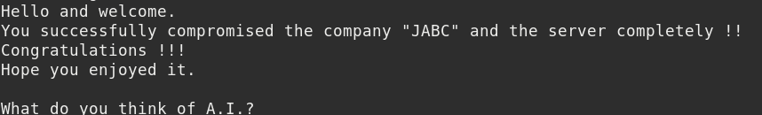

11. Capture the flag
Once obtaining root access, it was a matter of changing to the /root directory and performing a list.
# cd /root
# ls
Output:
Next, read the contents of Congrats.txt.
# cat Congrats.txt
Output:

Index
 Index
Index